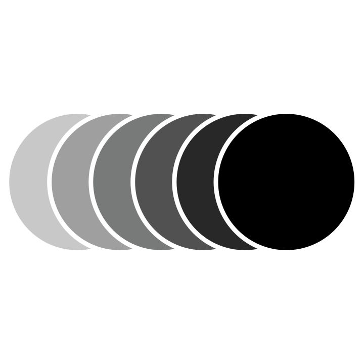

SERVICES
/>Web Design
Including:
Single Page Applications
Personal Websites (2-6 Pages)
Small Business Projects (7-15 Pages)
Full Scale Projects (15+ Pages)
Whether it's a simple one page form or a full-scale project, I have the expertise and the tools to help make your dreams a reality and help give your customers a positive user experience. Having working previously on various projects for a variety of different sectors, I have the ability to design for different customer bases and create engaging content. Whether the client gives me full range of creativity or if I have to design based off a strict style-guide, you can ensure that I use the elements and principles of design as a foundation. I'm currently assembling a list of projects I've worked on and they will be available for viewing soon on my portfolio page. Stay tuned!
Web Development
Including:
Wireframing & Mockups
Front-End Development
Back-End Development
Database Management
Verisioning & Deployment
Are looking for a solid designer? Are you looking for a developer? Perhaps looking to give up? Well look no further as I have knowledge just about every aspect of the development process from the initial sketches all the way to the final product. Along with the items listed above, I provide a lot of added features to the templated and custom websites I develop. These features include but not limited to domain name registration, custom signup & login systems, email integration with G-Suite, shortened URLs and load balancing for larger scale applications. I'm currently assembling a list of projects I've worked on and they will be available for viewing soon on my portfolio page. Stay tuned!
Illustration
Including:
Painting
Drawing
Raster Art
Vector Art
Over the years, I've become more accustomed to understand what makes a great illustration and what ideas and tools are used to help keep the creative juices flowing. I can create and develop a wide variety of illustrations on many different mediums. In terms of traditional art, I can create art using acrylic paint, markers, colored pencils, micron pens or simply pencil. In terms of digital art, I can use my wacom tablet to make raster or vector art.
Graphic Design
Including:
Branding & Mockups
Infographics
Social Media Banners & Ads
Booklet Design
Poster Design
Understand the basics of design is one thing but taking what you know and applying it to a product and understanding what their clients and customers what is another. Having previous design experience with various clientèle, I will help to understand more about your product or business and what I can do as a designer to help boost your sales. I will help you pick the right color scheme, choose a professional typeface, and present various ideas so we can help promote your business and expand you target audience.
MORE SERVICES
/>Video Editing
Video editing has also been a passion of mine basically ever since I was young. I used to have a YouTube channel where I made custom music videos for cartoons and reviewed movies. In my professional career, I have been editing videos for a sports live streaming company for over three years now working with many different notable clients. In edition to simple video editing, I also have basic knowledge of camera software and equipment and can perform basic video tasks such as chroma keying, color filtering and simple motion graphics.
Audio Editing
Audio editing has been a hobby of mine as well for some time as I editing audio files for both my YouTube videos and editing songs for my personal playlist. Using programs such as Adobe Audition and Cubase, I can perform basic audio editing tasks such as audio splicing, reverberation, amplification, pitch shifting and equalizing as well as more advanced tasks such as noise cancellation, vocal removing and channel extracting.

GIF Animation
Creating your own raster and vector art is certainly is a challenge but to take those designs and animate them is certainly a little bit harder. For recent projects, I was able to use a variety of programs to turn simple graphics into amazing moving images. GIF animations, when used the correct way, can truly transform your websites or social media platform or simply just wow your friends, all while keeping disk space low.
Windows Repair
Is your computer booting up slowly? Does it take what seems like forever just to load simple images? Well I'm here to help. For years I've been fixing simple computer issues related to both hardware and software and I've learned a few tricks of the trade to get your computer running just like new. I'm sorry Apple users, I don't have much advice for you besides empty the trash and get a new machine.